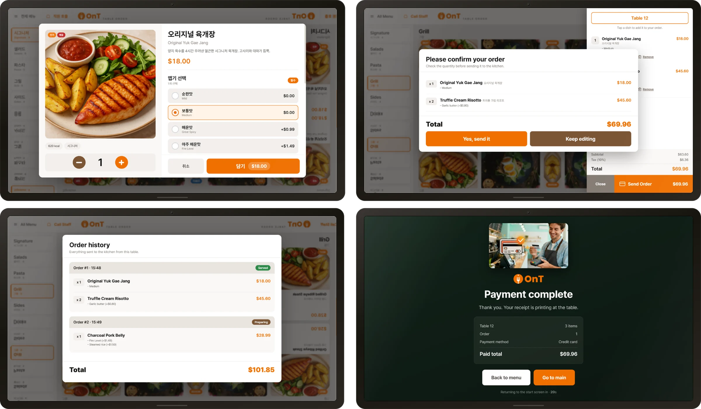
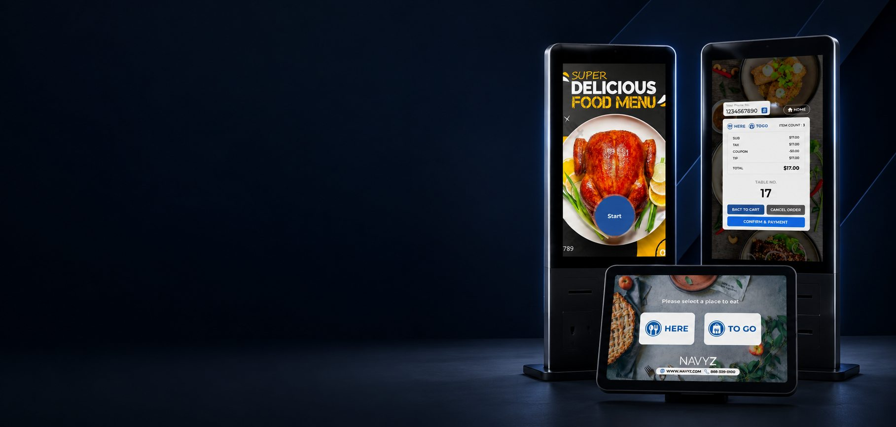

ONT KIOSK
테이블에 놓인 채로 손님이 직접 주문하는 키오스크. 대기 화면부터 결제 완료까지 한 화면 안에서 흐릅니다.
Overview
매장 직원을 거치지 않고 손님이 테이블에서 바로 주문하는 태블릿 키오스크. 영어와 한국어를 함께 쓰는 매장을 전제로 만들었습니다.
My Role
화면 설계와 퍼블리싱을 담당했습니다. 라이브러리 없이 HTML · CSS · JavaScript만으로 구현했습니다.
Build
대기 화면 · 메뉴 목록 · 메뉴 상세와 옵션 · 장바구니 · 결제 · 주문 완료. 한 페이지 안에서 화면이 전환되는 구조입니다.
Stack
- HTML
- CSS
- JavaScript
작업 환경
- ASP
협업 도구
- Zeplin
- FTP
Screens

Demo
한 페이지 안에서 화면 전환
한국어 · 영어 전환
옵션 선택 모달
장바구니 패널 · 수량 변경
알림 토스트
대기 화면 자동 재생 영상
화면 회전 대응
메뉴 데이터 분리
